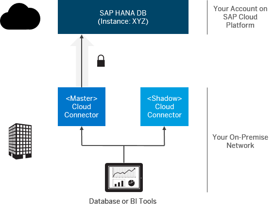

Connecting DB Tools to SAP HANA via Service Channels
Context
This section describes how you can connect database, BI, or replication tools running in on-premise network to a HANA database on SAP Cloud Platform using service channels of the Cloud connector. You can also use the high availability support of the Cloud connector to achieve a highly available database connection. The picture below shows the landscape in such a scenario.

Follow the steps below to set up failover support, configure a service channel and connect on-premise DB tools via JDBC or ODBC to the SAP HANA database.
- For more information on using SAP HANA instances, see Using a Productive SAP HANA Database System
- For the connection string via ODBC you need a corresponding database user and password (see step 4 below). See also: Guidelines for Creating Database Users
- Find detailed information on failover support in the SAP HANA Administration Guide:
Configuring Clients for Failover. Note This link points to the latest release of SAP HANA Administration Guide. Refer to the SAP Cloud Platform Release Notes
 to find out which HANA SPS is
supported by SAP Cloud Platform.
Find the list of guides for earlier releases in the Related Links
section below.
to find out which HANA SPS is
supported by SAP Cloud Platform.
Find the list of guides for earlier releases in the Related Links
section below.